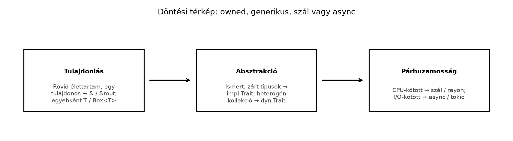

A könyv utolsó fejezetéhez érkeztünk: az előző alfejezetben átvetted az rkv teljes rendszert, most pedig egy olyan kézikönyvet kapsz, amely a C++-ból érkező fejlesztő számára sűríti össze a döntő fordítási mintákat, a tipikus csapdákat és a továbbtanulási utakat. Ez az alfejezet nem új nyelvi anyagot tanít, hanem a korábbi huszonegy fejezet tudását rendezi referenciává. A cél az, hogy amikor egy C++-kódrészletet Rustba írsz át, ne csak szintaktikailag forduljon le, hanem idiomatikus, a Rust típusrendszerét kihasználó megoldás szülessen.
A C++-ból Rustba való átállás legnagyobb nehézsége nem a szintaxis,
hanem az, hogy ugyanaz a tervezési reflex más következményekkel jár. A
C++-ban bevált std::shared_ptr-alapú gráfmodell például
Rustban Rc<RefCell<T>>-halommá válhat, ami
ugyanúgy nem skálázódik, mint a C++-os elődje, csak éppen a borrow
checker és a futásidejű kölcsönzési pánik még kellemetlenebbé teszi. Ez
a fejezet azokat a döntési pontokat foglalja össze, amelyekkel a könyv
során találkoztál: mikor érdemes másolni, mikor kölcsönözni, mikor
generikus és mikor dinamikus diszpécst használni, és hogyan válassz szál
és async között.
Szabály. Mielőtt egy C++-mintát Rustra ültetsz, először keresd meg a Rust-idiómát; ha a C++-minta nem illik az ownership- és traitrendszerbe, ne erőltesd, hanem alakítsd át a tervezést.
Definíció (fordítási kézikönyv). A C++→Rust fordítási kézikönyv olyan rendezett idiómapárok gyűjteménye, amely egy adott C++-konstrukcióhoz a neki megfelelő, idiomatikus Rust-konstrukciót rendeli.
Definíció (döntési térkép). A döntési térkép olyan irányított döntéssorozat, amely a fő tervezési választásokban (tulajdonlás, absztrakció, párhuzamosság) a konkrét követelményekből vezeti le az ajánlott Rust-eszközt.
Az alábbi táblázat a leggyakoribb C++-idiómák Rust-megfelelőjét foglalja össze. A második oszlopban szereplő választás nem mindig egyetlen típus, hanem egy gondolkodási irány: a döntést a konkrét követelményekre kell lebontani.
| C++-idióma | Rust-megfelelő | Megjegyzés |
|---|---|---|
| RAII, destruktor | Drop trait |
Ugyanaz a determinisztikus felszabadítás, de a drop nem
hívható explicit módon általános kódból: drop(x) a
Drop::drop hívása után az értéket is érvényteleníti. |
std::unique_ptr<T> |
Box<T> vagy közvetlen T |
Rustban a kupacallokáció explicit; a legtöbb érték alapból a
veremben él, és a Box csak akkor indokolt, ha nagy,
rekurzív vagy trait-objektumot tárolsz. |
std::shared_ptr<T> /
std::weak_ptr<T> |
Rc<T> / Weak<T> (egyszálú),
Arc<T> / Weak<T> (többszálú) |
Az Arc csak a tulajdont osztja meg, a
módosítást nem szinkronizálja. Két különböző szerep:
Arc<Mutex<T>> = közösen módosított
T
(let s = Arc::clone(&a); thread::spawn(move \|\| s.lock().unwrap().push(2)););
Mutex<Arc<T>> = lecserélhető, megosztott
handle: az olvasó
Arc::clone(&*m.lock().unwrap())-nal pillanatképet kap,
az író *m.lock().unwrap() = Arc::new(új)-val kicseréli, a
régi pillanatkép tovább él. Nem felcserélhető megoldások. |
std::optional<T> |
Option<T> |
Nincs null; a hiányt a típusrendszer kényszeríti ki. |
std::expected<T, E> (C++23) vagy kivételek |
Result<T, E> + ? operátor |
A hibák értékként terjednek; a ? a korai visszatérést
valósítja meg. |
| Osztályöröklés és virtuális függvények | trait + implementáció, trait-objektum
(dyn Trait), generikus paraméter vagy
enum |
Nincs implementációs öröklés. A választás két tengelyen dől el:
bővíthetőség (zárt halmaz → enum, nyílt → trait) és
futásidejű heterogenitás (egy típus fordítási időben → generikus, vegyes
elemek futásidőben → dyn Trait). |
| Sablonok és C++20 concepts | Generikusok impl Trait / where
boundokkal |
A generikus kód fordítási időben monomorfizálódik; a boundok a conceptekhez hasonlóan korlátozzák a típusparamétert. |
std::variant<T, U> |
enum |
A Rust enum az összeg-típus; a variánsokhoz adat
társítható, és a match kimerítő. |
| Lambda függvények | Closure-ök (Fn, FnMut,
FnOnce) |
A capture alapból implicit: a fordító a törzs használata alapján
kikövetkezteti, hogy referenciát, módosítható referenciát vagy értéket
fog meg; explicit csak a move kulcsszó (mindent érték
szerint fog meg). A Fn* trait-megvalósítás is
automatikus. |
Iterátorok és <algorithm> |
Iterator trait és adapterek (Iterator,
IntoIterator) |
A lusta adapterek önmagukban nem allokálnak; a gyűjtemények
iter(), iter_mut(), into_iter()
metódusokat adnak. Az iterátor nem indexel, ezért nincs határellenőrzés;
az indexelt (v[i]) ciklusnál a nyelv ellenőriz, az
optimalizáló pedig ott távolítja el az ellenőrzést, ahol bizonyítani
tudja az index érvényességét (lásd Teljesítmény:
mérés, profilozás, allokáció, release-beállítások). |
std::thread + mutex |
std::thread + Mutex / RwLock
/ csatornák |
A Send és Sync határok garantálják a data
race kizárását fordítási időben. |
std::async / std::future |
async / await + tokio (vagy más
runtime) |
A Rust future-ök lusták: pollolás alapúak, és a runtime futtatja őket. |
reinterpret_cast, nyers pointerek |
unsafe blokk, *const T /
*mut T, MaybeUninit<T> |
A nem biztonságos műveletek explicit blokkba kerülnek, és a
// SAFETY: komment dokumentálja az invariánst. |
A táblázat kulcsa az a felismerés, hogy a Rust nem egyszerűen „jobb C++”, hanem más kompromisszumokat köt: a biztonságért cserébe a fordító több információt követel, és ez gyakran tisztább, de másképp strukturált kódot eredményez.
Vegyünk egy tipikus C++-példát, amely öröklést és virtuális függvényt használ:
#include <iostream>
#include <memory>
#include <vector>
struct Shape {
virtual ~Shape() = default;
virtual double area() const = 0;
};
struct Circle : Shape {
double r;
explicit Circle(double radius) : r(radius) {}
double area() const override { return 3.14159 * r * r; }
};
struct Square : Shape {
double a;
explicit Square(double side) : a(side) {}
double area() const override { return a * a; }
};
double total_area(const std::vector<std::unique_ptr<Shape>>& shapes) {
double sum = 0.0;
for (const auto& s : shapes)
sum += s->area();
return sum;
}A Rust-megfelelő két fő alakot ölthet. Ha a variánsok zártak, az
enum a természetes választás:
enum Shape {
Circle { r: f64 },
Square { a: f64 },
}
impl Shape {
fn area(&self) -> f64 {
match self {
Shape::Circle { r } => std::f64::consts::PI * r * r,
Shape::Square { a } => a * a,
}
}
}
fn total_area(shapes: &[Shape]) -> f64 {
shapes.iter().map(|s| s.area()).sum()
}Ha viszont bővíthető hierarchiára van szükség, a trait-objektum a megfelelő:
trait Shape {
fn area(&self) -> f64;
}
struct Circle { r: f64 }
impl Shape for Circle {
fn area(&self) -> f64 {
std::f64::consts::PI * self.r * self.r
}
}
struct Square { a: f64 }
impl Shape for Square {
fn area(&self) -> f64 {
self.a * self.a
}
}
fn total_area(shapes: &[Box<dyn Shape>]) -> f64 {
shapes.iter().map(|s| s.area()).sum()
}Különbség. A C++-ban a
std::unique_ptr<Shape> és a virtuális hívás a
szokásos nyílt hierarchia-minta. Rustban ugyanerre a
Box<dyn Shape> használható, de csak akkor, ha a
viselkedés valóban nyílt és heterogén. Ha a variánsok ismertek, az
enum + match a jobb választás: nincs
vtable-indirekció, nincs kupacallokáció, és a fordító ellenőrzi, hogy
minden esetet kezeltél.
Rc<RefCell<T>>
túlhasználata. A C++-os shared_ptr-reflex könnyen
vezet Rc<RefCell<T>>-hálókhoz, ahol a
kölcsönzés futásidőben bukik. A Rust azt kényszeríti ki, hogy a
tulajdonviszonyokat előre átgondold: ki birtokolja az adatot, és ki
kérdezheti le? Gyakran a megoldás a Weak használata
ciklusok megtörésére, az Rc helyett egyetlen tulajdonos
bevezetése, vagy a struktúra átdolgozása
indexekkel/azonosítókkal.
Klónozás a borrow checker legyőzésére. Amikor a
fordítási hiba E0507 (kimozgatás kölcsönzött vagy indexelt tartalomból:
cannot move out of index of Vec<String>) vagy E0382
(használat mozgatás után: borrow of moved value), sok kezdő
a .clone()-t szúrja be. Ez ideiglenesen elnémítja a hibát,
de felesleges másolatokat és rejtett teljesítményveszteséget okoz. A
helyes válasz gyakran a kölcsönzés (&), a
Cow (copy-on-write), vagy az adatáramlás átszervezése úgy,
hogy az érték ne kerüljön többszörös tulajdonba.
unwrap() és expect()
mindenhol. A Result és Option
feltárása nélkül a kód hamarosan tele lesz pánikokkal, amelyek a C++-os
kivételeket idézik vissza. A könyvtári kódban a ? operátor
és a saját hibatípus a fenntartható út; az expect csak
olyan invariánsokra való, amelyek megsértése programhibát
jelez.
Öröklés-szimuláció Deref-fel. A
Deref trait arra való, hogy egy típus úgy viselkedjen, mint
egy másik típusú érték referenciája, nem pedig arra, hogy
„alosztályozást” építs. A Deref-fel “örökölt” metódusok
csak automatikus derefeléssel találhatók meg: a célértéken definiált
trait-ek nem teljesítik a generikus határt a burkoló típusra, nincs
altípusosság (a Wrapper nem helyettesíthető
Target-tel ott, ahol típust várnak), és a metódusfeloldás
meglepő lehet, ha a burkoló és a cél metódusneve ütközik. Ha közös
viselkedés kell, használj traitet; ha zárt variánsok, használj
enum-ot.
unsafe blokk indokolatlan
használata. A unsafe nem a C++-os „kapcsold ki az
ellenőrzést” eszköz, hanem arra való, hogy olyan invariánsokat írj le,
amelyeket a típusrendszer nem tud kifejezni. Minden unsafe
blokkhoz // SAFETY: komment tartozik, és a blokk köré
biztonságos absztrakció épül.
Az alábbi folyamatábra a leggyakoribb tervezési döntéseket foglalja össze. A döntés mindig a konkrét használatból indul ki, nem a C++-os beidegződésből.

Az ábra üzenete: először tisztázd a tulajdonlást, azután válassz absztrakciós mechanizmust, végül a párhuzamossági modellt. A három döntés független, de a rosszul megválasztott tulajdonlás később megbosszulja magát a párhuzamos kódban.
&T vagy
&mut T). Ha a kalauz birtokolnia kell az adatot,
használj T-t, nagy vagy rekurzív adatnál
Box<T>-t.dyn Trait: ha a típusok
fordítási időben ismertek, és a kód nem okoz kódfúvódást, használj
generikust. Ha heterogén kollekcióra vagy bővíthető plugin-rendszerre
van szükséged, használj dyn Trait-et.rayon; sok párhuzamos I/O-hoz async és tokio. A kettő
kombinálható, de egy projektben érdemes egy domináns modellt
választani.A könyv végére értél, de a Rust ökoszisztéma ennél jóval mélyebb. A következő lépéseket a céljaid szerint válaszd:
Az alábbi források mindegyike megnyitható hivatkozás; az elérhetőséget és a tartalmat a szerzői ellenőrzés napján (2026-10-28) a rögzített toolchainhez (Rust 1.99.1) viszonyítva néztük meg.
Crate-ek API-ját a docs.rs-en a verzió megadásával érdemes nyitni
(például https://docs.rs/embassy-executor/0.10.0), mert az
API verziónként változik.
| Angol | Magyar | Hol |
|---|---|---|
| ownership | tulajdonjog | Ownership |
| borrowing / borrow checker | kölcsönzés / kölcsönzés-ellenőr | Referenciák, A borrow checker működése |
| lifetime | élettartam | Élettartam-annotációk |
| move (destructive move) | mozgatás (destruktív mozgatás) | Ownership |
| trait / trait object | trait / trait-objektum | Trait-ek és generikusok, Trait objektumok |
| monomorphization | monomorfizálás | Trait-ek és generikusok |
| interior mutability | belső mutabilitás | Belső mutabilitás |
| smart pointer | okos mutató | Box, Rc, Arc és Weak |
| data race | adatversenyhelyzet | Szálak, Send és Sync |
| panic | pánik | Result, a ? operátor és a panic helye |
| zero-cost abstraction | nulla költségű absztrakció | Miért Rust? |
| undefined behavior (UB) | nem definiált viselkedés | Unsafe Rust |
| FFI / ABI | idegen függvény-interfész / bináris interfész | C ABI |
| macro hygiene | makróhigiénia | Deklaratív és procedurális makrók |
| variance | variancia | Newtype, PhantomData, typestate |
| typestate | típusállapot-minta | Newtype, PhantomData, typestate |
| future / executor / waker | future / végrehajtó / ébresztő | Future-ök és async/await |
| pinning | rögzítés (pin) | Pin, Unpin, async trait-ek |
| workspace / crate | munkaterület / csomag-egység | Függőségek, feature-ök, workspace-ek |
Az alábbi kérdések a könyv kulcspontjait tesztelik. Válaszold meg őket a fejezet elolvasása után, majd ellenőrizd a megoldásokat.
std::variant-nak, és miért jobb annál a Rust
enum mintaillesztéssel?std::map<std::string, int>-et tölt fel, majd írd át
idiomatikus Rustra HashMap-mel és az Entry
API-val. Miért nem a [] operátort használod?MemStore,
FileStore, és egy jövőbeli RemoteStore).
Melyik Rust-absztrakciót választod: generikus paramétert vagy
dyn Storage trait-objektumot? Indokold a választást két
tengelyen: bővíthetőség (zárt/nyílt halmaz) és futásidejű heterogenitás
(egy vagy több tárolótípus egyszerre, fordítási vagy futásidőben
választva).let mut data = vec![1, 2, 3];
let first = &data[0];
data.push(4);
println!("{}", first);A C++ std::variant megfelelője a Rust
enum. Az enum jobb, mert a match
kimerítőségét a fordító ellenőrzi: ha új variánst adsz hozzá, a
fordítási hiba felsorolja az érintett match-eket. A C++
std::visit hasonló célt szolgál, de a Rust beépített nyelvi
támogatása egyszerűbbé és biztonságosabbá teszi a
mintaillesztést.
C++:
#include <iostream>
#include <map>
#include <string>
int main() {
std::map<std::string, int> m;
m["a"] = 1;
m["b"] += 2;
for (auto& [k, v] : m)
std::cout << k << " -> " << v << '\n';
}Rust:
use std::collections::HashMap;
fn main() {
let mut m: HashMap<String, i32> = HashMap::new();
m.entry("a".to_string()).or_insert(1);
*m.entry("b".to_string()).or_insert(0) += 2;
for (k, v) in &m {
println!("{k} -> {v}");
}
}A [] operátor Rustban a Index trait, amely
panikkel, ha a kulcs nem létezik. Az Entry API egyszerre ad
hozzáférést a meglévő értékhez vagy hoz létre újat, és nem igényel
kettős keresést.
A két tengely: bővíthetőség és futásidejű
heterogenitás. Ha egy futásban egyetlen tárolótípus él, és azt
fordítási időben ismerjük, a generikus paraméter
(Store<S: Storage>) monomorfizál, nincs
vtable-indirekció. Ha a típust futásidőben (konfigurációból) választjuk,
vagy vegyesen kell tárolni őket, dyn Storage kell, akkor
is, ha a halmaz zárt. Ha a halmaz zárt és a variánsok adatait közösen
akarjuk kezelni, az enum + match is jó; nyílt
halmaznál (bővítmények, jövőbeli RemoteStore) trait kell,
mert az enum-ot minden új tárolónál módosítani kellene. A
vtable-hívás költsége általában kicsi a lemezes tárolóhoz képest, de
mérni kell; ne állítsunk általános sebességkülönbséget mérés nélkül. Az
rkv SharedStore-ja
Arc<Mutex<Box<dyn Storage + Send>>>-t
használ, így a szerver futásidőben választhat háttértárolót (Mutex, RwLock, csatornák és a megosztott
rkv).
A hiba: E0502 – nem lehet &mut kölcsönzés
(data.push(4)) akkor, amikor egy &
kölcsönzés (first) él. A javítás: kerüld a kölcsönzés és a
módosítás átfedését. Például:
let mut data = vec![1, 2, 3];
let first = data[0]; // másolás, mert i32: Copy
data.push(4);
println!("{}", first);Ha az érték nem Copy, a feladat viselkedését (a
push után is az első elemet írjuk ki) kétféleképp
őrizhetjük meg. Az első: a push után újra indexelünk, így
nem él kölcsönzés a módosítás alatt:
let mut data = vec![String::from("a"), String::from("b")];
data.push(String::from("c"));
println!("{}", data[0]); // aA második: ha a push előtti állapotról kell tulajdonolt
pillanatkép, akkor a másolás indokolt, és a clone ezt
jelzi:
let mut data = vec![String::from("a"), String::from("b")];
let first = data[0].clone(); // szükséges másolat: a Vec átméretezése miatt a &data[0] nem élhetne tovább
data.push(String::from("c"));
println!("{}", first); // aMindkét változat ugyanazt a String-et (a)
írja ki, mint az eredeti szándék, és a Vec bővítésével
együtt fordul.
futures-util crate-ben vannak (nem a
tokio-ban):
use futures_util::stream::{self, StreamExt}; és
.buffer_unordered(N). A fájlt soronként olvassuk
(tokio::io::AsyncBufReadExt::lines), a kérések legfeljebb
N darab egyszerre futnak:const MAX_IN_FLIGHT: usize = 4;
let total: usize = lines // Stream<Item = String>
.map(|l| fetch(l)) // minden sorból egy Future
.buffer_unordered(MAX_IN_FLIGHT) // legfeljebb 4 egyidejű kérés
.fold(0, |acc, n| async move { acc + n })
.await;Tokio-alternatíva: JoinSet +
Arc<Semaphore>; a
sem.clone().acquire_owned().await a ciklusban vár, amíg
felszabadul egy hely (ez a visszanyomás), a
set.join_next().await gyűjti az eredményeket. Mindkét
változatot lefuttattuk 50, illetve 20 elemre: a mért csúcs-egyidejűség 4
volt, a limit nem sérült. A szálmodell különbsége pontosan: egy blokkoló
hívás leköt egy OS-szálat (a szál alszik, nem terheli a CPU-t,
de a szálak száma és memóriája korlátos); CPU-terhelés esetén viszont a
mag dolgozik, és az async nem gyorsít: a CPU-igényes munkát
spawn_blocking-ba vagy rayon-ra kell tenni,
különben az executor szálát foglalja le.
Ez a záró alfejezet a C++→Rust átállás kézikönyvét adja: a fő
C++-idiómák (unique_ptr, shared_ptr, öröklés,
sablonok, kivételek, iterátorok, szálak) Rust-megfelelőit táblázatba
foglalja, és kiemeli a döntő különbségeket. A gyakori átállási hibák –
Rc<RefCell<T>> túlhasználat, klónozás a borrow
checker ellen, unwrap mindenhol, öröklés-szimuláció
Deref-fel, indokolatlan unsafe – mind a C++-os
reflexek gátló hatását mutatják. A döntési térkép három fő választást
rendszerez: owned vs. borrowed, generikus vs. dyn Trait,
szál vs. async. A továbbtanulási út a Rustonomicon, az async
dokumentáció, az Embedded Rust Book és a compiler internals felé mutat.
Az önellenőrző kérdéssor a kulcspontokat teszteli. Ezzel az rkv projekt
teljes rendszerként elkészült, és a könyv anyaga lezárult.
Az alfejezet a könyv korábbi fejezeteire épít, különösen a Ownership: minden értéknek egy tulajdonosa van, a Trait-ek és generikusok: sablonok és concepts helyett, a Szálak, Send és Sync és a Tokio részekre. A továbbtanulási források a Rust hivatalos dokumentációjának részei: a Rustonomicon (https://doc.rust-lang.org/nomicon/), az Asynchronous Programming in Rust (https://rust-lang.github.io/async-book/), az Embedded Rust Book (https://docs.rust-embedded.org/book/) és a rustc-dev-guide (https://rustc-dev-guide.rust-lang.org/). A nyelvi állítások a stabil Rust-szabályokon alapulnak; a crate-verziók és a dokumentációk elérhetősége idővel változhat.